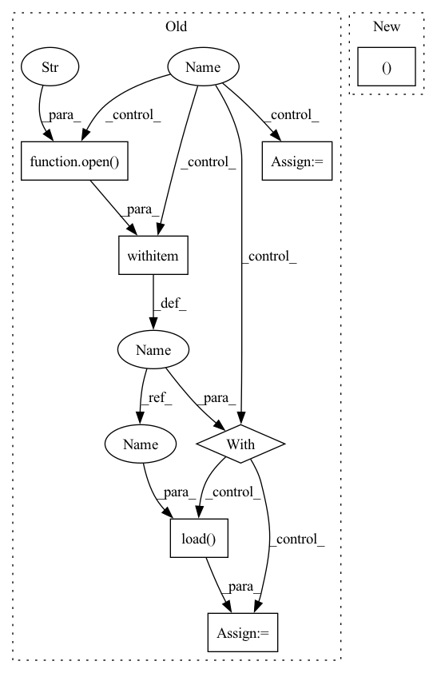

Pattern ID :40604

Before Change
def load_file(self, path):
if self.train:
with open(os.path.join(path, "train_img_to_path"), "rb") as f:
rawImg = pickle.load(f)
rawPath = pickle.load(f)
with open(os.path.join(path, "train_img_to_target"), "rb") as f:
rawTags = pickle.load(f)
else:
with open(os.path.join(path, "test_img_to_path"), "rb") as f:
rawImg = pickle.load(f)
rawPath = pickle.load(f)
with open(os.path.join(path, "test_img_to_target"), "rb") as f:
rawTags = pickle.load(f)
After Change
def load_file(self, path):
// load meta file to get labels
datas, labels = self.load_meta_data(os.path.join(self.processed_folder, "client_data_mapping", self.data_file+".csv"))
return datas, labels
In pattern: SUPERPATTERN
Frequency: 3
Non-data size: 7
Instances
Fragment ID: 114865752
Project Name: symbioticlab/fedscale
Commit Name: 53647ea678fcd29e0f150dd4554743ac370f36ec
Time: 2021-09-26
Author: dywsjtuji@gmail.com
File Name: core/utils/femnist.py
M Class Name: FEMNIST
N Class Name: FEMNIST
M Method Name: load_file(2)
N Method Name: load_file(2)
M Parent Class:
N Parent Class:
M File Name: core/utils/femnist.py
N File Name: core/utils/femnist.py
M Start Line: 108
M End Line: 123
N Start Line: 119
N End Line: 121
'>
Before Change
def test(net, test_loader, device, window_size, batch_size, plot=True):
if plot:
with open(config.RESOURCES_DIR + "/loss.pkl", "rb") as f:
loss = pickle.load(f)
plot_learning_curve(loss, xlabel="Episode", ylabel="Loss")
with open(config.RESOURCES_DIR + "/accuracy.pkl", "rb") as f:
acc = pickle.load(f)
plot_learning_curve(acc, xlabel="Episode", ylabel="Accuracy")
with torch.no_grad():
ecgs_list = []
After Change
print("{} ACC: {:.4f}".format("testing", right / total))
return ecgs, labels_list, predicted_list
def eval (ecgs, y_true, y_pred, labels, target_names, plot_acc=False, plot_loss=False, plot_conf_matrix=False, plot_ecg=False, plot_ecg_windows_size=None):
'>
Fragment ID: 114865768
Project Name: jergusadamec/ecg-deep-segmentation
Commit Name: 0b7f33c6c37f70bfe920a0193a61f28d645e81af
Time: 2020-05-29
Author: jergus.adamec@gmail.com
File Name: engine/test.py
M Class Name: AnonimousClass
N Class Name: AnonimousClass
M Method Name: test(6)
N Method Name: test(6)
M Parent Class:
N Parent Class:
M File Name: engine/test.py
N File Name: engine/test.py
M Start Line: 48
M End Line: 86
N Start Line: 51
N End Line: 94
'>
Before Change
def load_file(self, path):
if self.train:
with open(os.path.join(path, "train_img_to_path"), "rb") as f:
rawImg = pickle.load(f)
rawPath = pickle.load(f)
with open(os.path.join(path, "train_img_to_target"), "rb") as f:
rawTags = pickle.load(f)
else:
with open(os.path.join(path, "test_img_to_path"), "rb") as f:
rawImg = pickle.load(f)
rawPath = pickle.load(f)
with open(os.path.join(path, "test_img_to_target"), "rb") as f:
rawTags = pickle.load(f)
After Change
def load_file(self, path):
// load meta file to get labels
datas, labels = self.load_meta_data(os.path.join(self.processed_folder, "client_data_mapping", self.data_file+".csv"))
return datas, labels
'>
Fragment ID: 114865754
Project Name: symbioticlab/fedscale
Commit Name: 53647ea678fcd29e0f150dd4554743ac370f36ec
Time: 2021-09-26
Author: dywsjtuji@gmail.com
File Name: core/utils/femnist.py
M Class Name: FEMNIST
N Class Name: FEMNIST
M Method Name: load_file(2)
N Method Name: load_file(2)
M Parent Class:
N Parent Class:
M File Name: core/utils/femnist.py
N File Name: core/utils/femnist.py
M Start Line: 108
M End Line: 123
N Start Line: 119
N End Line: 121
'>
Before Change
save_path = join(test_path, test_scan_name, "predictions")
make_dir(save_path)
for j in range(len(test_probs)):
test_file_name = self.test_list[j]
frame = test_file_name.split("/")[-1][:-4]
proj_path = join(cfg.dataset_path, test_scan_name, "proj")
proj_file = join(proj_path, str(frame) + "_proj.pkl")
if isfile(proj_file):
with open(proj_file, "rb") as f:
proj_inds = pickle.load(f)
probs = test_probs[j][proj_inds[0], :]
pred = np.argmax(probs, 1)
store_path = join(test_path, test_scan_name, "predictions",
str(frame) + ".label")
pred = pred + 1
pred = remap_lut[pred].astype(np.uint32)
After Change
// name = inputs["attr"]["name"]
name = inputs["attr"]["name"]
// print(name)
name_seq, name_points = name.split("_")
test_path = join(cfg.test_result_folder, "sequences")
make_dir(test_path)
'>
Fragment ID: 114865763
Project Name: isl-org/open3d-ml
Commit Name: 1ada80a42a187a3eefcb45d2f70078570d50872d
Time: 2020-08-22
Author: yilingq@umd.edu
File Name: ml3d/datasets/semantickitti.py
M Class Name: SemanticKITTI
N Class Name: SemanticKITTI
M Method Name: save_test_result(3)
N Method Name: save_test_result(3)
M Parent Class:
N Parent Class:
M File Name: ml3d/datasets/semantickitti.py
N File Name: ml3d/datasets/semantickitti.py
M Start Line: 107
M End Line: 126
N Start Line: 108
N End Line: 129